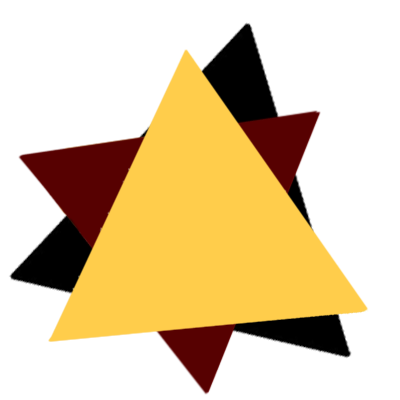

Weboldal készítés kisvállalkozásoknak
Sokan csak egy "szép oldalt" kapnak. Én olyat készítek, amely bizalmat épít, meggyőz — és arra ösztönzi a látogatót, hogy felvegye Önnel a kapcsolatot.

BRUTAL ARCH
Weboldal megnézNincs bonyolult folyamat. Csak öt egyszerű lépés — az első kapcsolatfelvételtől a kész weboldalig.
Írjon üzenetet vagy hívjon fel. Nem kell semmi előkészület — csak mesélje el, mivel foglalkozik és nagyjából mire gondolt.
Rövid, kötelezettségmentes beszélgetés, ahol megértem az Ön vállalkozását, céljait és azt, kinek szól majd az oldal. Ez alapján készül az ajánlat.
Megtervezem az oldal felépítését, kinézetét és tartalmát — az Ön visszajelzései alapján csiszoljuk tökéletesre. Semmi nem lesz meglepetés.
Amikor mindketten elégedettek vagyunk az eredménnyel, az oldal élesbe megy. Megmutatom hogyan működik, és válaszolok minden kérdésére.
Az átadás után sem marad egyedül. Havonta ellenőrzöm az oldalt — hogy minden rendben működjön, gyors maradjon, és Ön a vállalkozásával foglalkozhasson.
Minden nap vannak emberek, akik az Önéhez hasonló szolgáltatást keresnek. A kérdés csak az: megtalálják-e Önt?
Egy elavult vagy lassú weboldal nem semleges dolog —
aktívan löki el az érdeklődőket. Az első benyomás másodpercek alatt kialakul,
és ha az oldal nem meggyőző, a látogató továbblép a következőre.
Olyan weboldalt készítek, amely:
✔ azonnal bizalmat kelt az első látogatónál
✔ világosan megmutatja, miért Önt válasszák
✔ mobilon ugyanolyan jól működik, mint számítógépen
✔ és a kész átadás után is gondoskodva marad
Bemutatkozó oldalakat, landing page-eket és kisebb vállalati weboldalakat — minden esetben az Ön vállalkozásának céljára és közönségére szabva. Nem sablont adok, hanem olyat ami ténylegesen működik az Ön piacán.
Nem tűnök el. Havonta ellenőrzöm az oldalt, hogy minden rendben fusson. Ha kérdése van vagy valamit módosítani szeretne, elérhető vagyok — nem kell egyedül megküzdenie a technikai dolgokkal.
Általában 2–4 hét, a projekt összetettségétől függően. Az elején pontosan megbeszéljük az ütemtervet — hogy tudja, mikor és mit várhat.
Igen. Több csomag közül lehet választani különböző igényekhez. Ha egyik sem illik pontosan, egyedi ajánlatot is készítek — mert minden vállalkozás más, és minden büdzsét komolyan veszek.
Teljesen érthető kérdés. Ezért az első egyeztetés ingyenes és kötelezettségmentes — ismerjen meg, tegye fel a kérdéseit, és csak akkor döntsön, ha meggyőződött róla.